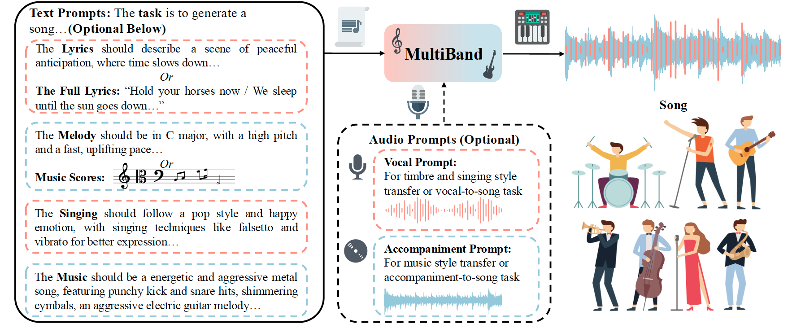

Multi-Task Song Generation with Personalized Prompt-Based Control
Anonymous Authors
Abstract.
Song generation focuses on producing controllable high-quality songs based on various personalized prompts.
However, existing methods struggle to generate high-quality vocals and accompaniments with effective style control and proper alignment.
Additionally, they fall short in supporting various personalized tasks based on diverse prompts.
To address these challenges, we introduce MultiBand, the first multi-task song generation model for synthesizing high-quality, aligned songs with extensive control based on diverse personalized prompts.
MultiBand comprises these primary models:
1) VocalBand, a decoupled model, leverages the flow-matching method for singing styles, pitches, and mel-spectrograms generation, allowing high-level control with fast and high-quality vocal generation.
2) AccompBand, a flow-based transformer model, incorporates the Aligned Vocal Encoder, using contrastive learning for alignment, and Band-MOE, selecting suitable experts for enhanced quality and control.
This model allows for generating controllable, high-quality accompaniments perfectly aligned with vocals.
3) Two generation models, LyricBand for lyrics and MelodyBand for melodies, contribute to the comprehensive multi-task song generation system, allowing for extensive control based on multiple personalized prompts.
Experimental results demonstrate that MultiBand performs better over baseline models across multiple tasks using objective and subjective metrics.
Audio samples are available at https://multiband.github.io.
Overview

In this paper, we introduce MultiBand, the first multi-task song generation model for synthesizing high-quality, aligned songs with extensive control based on diverse personalized prompts.
Following the human perception that accompaniment complements vocal melody with complex harmonic and rhythmic structure, we generate them separately.
To achieve fast and high-quality vocal generation with high-level control, we design a decoupled model VocalBand, predicting singing styles, pitches, and mel-spectrograms based on the flow-matching model.
Based on the complex nature of music, we introduce a flow-based transformer model AccompBand to generate high-fidelity, controllable, aligned accompaniments.
For proper alignment, we propose the Aligned Vocal Encoder using contrastive learning, encoding vocals to carry style, rhythm, and melody closely related to accompaniment.
We also design Band-MOE (Mixture of Experts), selecting suitable experts based on the time step, text prompts, and vocal embedding for enhanced quality and control.
Additionally, we add two generation models, LyricBand for lyrics and MelodyBand for melodies, contributing to the comprehensive multi-task song generation system, like a versatile band.
Our experiments on a combination of open-source and web-crawled bilingual song datasets show MultiBand can generate high-quality songs based on various prompts, outperforming baseline models in multiple tasks, including melody and lyric generation, singing voice synthesis, music and song generation, and other related tasks.
Note: For fair comparison, all samples are resampled to 48kHZ and normalized to -23dB LUFS.
In this section, we present generated samples of song generation.
We input full lyrics, music scores, singing and music styles as text prompts to generate songs via VocalBand and AccompBand.
Lyrics
Singing Styles
Music Styles
Generated Vocal
Generated Accompaniment
Generated Song
如果今天我们就要分离，让我痛快的哭出声音
The singing features a passionate male vocalist singing expressively, infusing the performance with deep emotion that complements the overall feel of the R&B piece.
The music consists of shimmering hi-hats, energetic crash cymbals, a wide acoustic rhythm guitar melody, shimmering shakers, punchy snares, and a mellow bass. This arrangement creates a passionate and emotional vibe.
不再看天上太阳透过云彩的光
The singing showcases a female vocalist singing melodically in a falsetto style, delivering a light and airy performance that enhances the romantic essence of the music.
The music features acousitc guitars playing the melody, supported by a bass guitar in the background.
Now I know there's another world. Butterflies floating in the air. There is someone out there
The pop singing features a female vocal that delivers an engaging performance, filled with expressive dynamics and an inviting tone that captivates listeners, evoking a sense of wonder and possibility.
This music piece showcases a medium tempo with a catchy electric guitar riff, smooth bass line, steady drumming, keyboard harmony, and rhythmic acoustic guitar strumming. The music is soft, rich, full-bodied, emphatic, and pleasant.
I love you for a thousand more
The singing features a female vocalist using breathy techniques while singing melodically in the lead, bringing an effortless charm and lightness to the performance, creating an easygoing atmosphere that resonates with listeners.
The music is played by both acoustic and electric guitars, supported by a bass guitar in the background. The rhythm is provided by a basic acoustic drum beat, making it suitable for the opening theme of a teenage drama TV series.
Singing Style Transfer
In this section, we present generated samples of singing style transfer.
We input full lyrics, music scores, singing and music styles as text prompts, and vocal prompts for timbre and personalized styles, to generate songs via VocalBand and AccompBand.
Lyrics
Singing Styles
Music Styles
Vocal Prompt
Generated Vocal
Generated Song
为什么就能那样简单,而又是为什么,人年少时
The singing features a passionate female vocal. Her singing is emotional and addictive, showcasing techniques like vibrato to enhance the expression and draw the listener into the story.
The music consists of wide acoustic guitar chords, a groovy bassline, and punchy kick and snare hits. It sounds addictive, vibrato, and emotional.
我们都煎熬，我不要，流泪睡着
The singing showcases a male vocalist delivering an affectionate performance in falsetto, skillfully navigating the melody with emotional nuances that resonate deeply with the listener, capturing the essence of heartache.
The slow pop background music is characterized by an acoustic guitar and piano playing the main tune, accompanied by a bass guitar in the background. The rhythmic foundation consists of a slow tempo acoustic drum beat.
让你别再担心,在没有你之前的日子曾经,也开心
The singing features a passionate male vocal. His delivery is groovy and addictive, captivating the audience with its vibrant energy.
This pop background music includes punchy kick and snare hits, shimmering hi-hats, a groovy bassline, and an electric guitar melody, creating a fun and emotional atmosphere.
要知道伤心总是难免的,在每一个梦醒时分,有些事情你现在不必问,有些人你
This pop singing piece features a female vocalist singing melodically in the lead, exuding charm and energy. Her performance creates an easygoing and danceable vibe that invites listener engagement.
The background music consists of a keyboard playing the main tune, supported by a bass guitar, with an electronic drum beat providing the rhythm. This creates a soft, passionate, and mellow atmosphere, suitable for the opening theme of a teenage drama TV series.
黑暗之中,沉默地探着你的手,是否我真的一无所有
This pop singing piece features a male vocalist singing melodically in the lead, imbued with sentimentality and warmth. His performance enhances the nostalgic quality of the lyrics, inviting listeners to reflect on their own experiences.
The music is played by the keyboard, supported by a bass guitar in the background, with a acoustic drum beat providing the rhythm.
都不搭
The singing features a male vocalist singing melodically with vibrato in the lead, infusing the performance with emotional depth and dynamic expression that resonates with the listener, enhancing the overall mood of the singing.
This indie rock background music includes a main tune played by the electric guitar, supported by a bass guitar in the background. The rhythm is driven by a simple acoustic drum beat, creating a groovy atmosphere suitable for a coffee shop soundtrack.
Music Style Transfer
In this section, we present generated samples of music style transfer.
We input full lyrics, music scores as text prompts, and accompaniment prompt with GT vocal to generate songs via AccompBand.
GT Vocal
Accompaniment Prompt
Generated Accompaniment
Generated Song
Vocal-To-Song Generation
In this section, we present generated samples of vocal-to-song generation.
We input GT vocal, and music styles as text prompt to generate songs via AccompBand.
Music Styles
GT Vocal
Generated Accompaniment
Generated Song
The music features acoustic and electric guitars playing the melody, supported by a simple bass line. A slow tempo acoustic drum beat provides the rhythmic foundation, creating a cheerful atmosphere suitable for the opening theme of a teenage drama TV series.
This music includes shimmering hi-hats, punchy kicks, a groovy bassline, and a synth lead melody, crafting an emotional and passionate sound. The arrangement breathes a happy and hopeful essence, enhancing the overall mood of the piece.
The rock music features a wide electric guitar melody, groovy bass guitar, and punchy kick and snare hits, creating an addictive and passionate sound. This arrangement embodies an emotional aura.
The pop music includes tinny bells, synth lead melodies, wooden percussion, shimmering hi-hats, and mellow piano chords. This combination produces a happy, joyful, and fun vibe, reminiscent of something you might hear in a club setting.
The slow pop music is characterized by a male voice singing the main melody, accompanied by programmed percussion playing a simple beat and a synth playing a repetitive two-note phrase. This creates a romantic mood suitable for a romantic movie.
The live music features punchy kick and snare hits, shimmering hi-hats, a groovy bassline, and a wide synth lead melody. This energetic arrangement combines addictive qualities, making it perfect for a vibrant pop song.
Accompaniment-To-Song Generation
In this section, we present generated samples of accompaniment-to-song generation.
We input GT accompaniment, and lyrics, singing styles as text prompt, to generate songs via VocalBand.
Lyrics
Singing Styles
GT Accompaniment
Generated Vocal
Generated Song
看着他们我就湿了眼眶
This nostalgic pop singing features a male vocalist whose poignant delivery evokes a deep sense of longing. His emotive singing style, rich in warmth and vulnerability, invites listeners to reflect on their own memories, creating a hauntingly beautiful atmosphere throughout the track.
怎么能轻易说要结束
This pop singing piece features a female vocalist utilizing a mixed voice technique, infusing her performance with deep emotion. Her expressive delivery and skillful vocal techniques create a sad atmosphere.
如果还有遗憾，又怎么样呢，伤了痛了懂了
This pop singing piece showcases a male vocalist employing a mixed voice technique, delivering an emotional performance that resonates with listeners. His use of dynamic expression and nuanced vocal techniques enhances the sentimental quality of the song, inviting reflection and personal connection through the warm and nostalgic lyrics.
一直到彩虹出现那天
This singing showcases a male vocalist whose gentle, slow singing creates a soothing atmosphere. His soft tones and deliberate phrasing evoke a sense of calm.
Ablation Study
In this section, we present generated samples of ablation study on MultiBand.
We input different prompts to generate songs via LyricBand, VocalBand, and AccompBand.
In this subsection, we present generated samples of song generation (w/o lyrics).
We input lyric prompts, music scores, singing and music styles as text prompts to generate songs via LyricBand, VocalBand, and AccompBand.
Lyric Prompts
Singing Styles
Music Styles
Generated Lyrics
Generated Vocal
Generated Accompaniment
Generated Song
Generate a Chinese lyric about autumn and longing, capturing a melancholic and reflective mood, with elements of wind, dreams, loneliness, and heartache.
The recording showcases a female vocalist singing in a weak falsetto, delivering a sorrowful performance that evokes a sense of longing and emotional depth.
The music features acoustic and electric guitars playing a melodic line, supported by a bass guitar in the background. A basic acoustic drum beat provides a steady rhythm, creating an easygoing atmosphere suitable for a lighthearted piece.
风吹过，梦不见寂寞相伴，故秋声难负心伤
Generate a Chinese lyric about the warmth of the morning, expressing gentleness and hope, with themes of sunshine and love.
The recording showcases a male vocalist singing in a weak falsetto, delivering a romantic performance that conveys tenderness and emotional warmth.
The background features acoustic and electric guitars playing a melodic line, complemented by a bass guitar in the background. A basic acoustic drum beat sets a steady rhythm, creating a relaxed atmosphere suitable for a romantic piece.
你用你的温柔，让我走向清晨
In this subsection, we present generated samples of song generation (w/o notes).
We input full lyrics, melody prompts, singing and music styles as text prompts to generate songs via MelodyBand, VocalBand, and AccompBand.
Lyrics
Melody Prompts
Singing Styles
Music Styles
Generated Vocal
Generated Accompaniment
Generated Song
可惜从没人陪我演这剧本
Please create a Chinese song for an alto singer, conveying a slightly sad emotion. The key should be A minor, and the BPM should be between 100 and 110.
This pop singing features a female vocalist utilizing vibrato, delivering a heartfelt and sorrowful performance that deeply resonates with the listener's emotions.
The background music combines melodic elements with a soft instrumental arrangement, creating a poignant atmosphere. The rhythmic foundation consists of gentle percussion and flowing harmonies, enhancing the overall feeling of sadness and longing, making it suitable for emotional moments in a narrative context.
空着手，犹如你来的时候
Please create a Chinese song for a high male singer with slightly sad emotions. The key should be F major, and the BPM should be between 130 and 150.
This slow pop singing features a male vocalist delivering a smooth and romantic performance, skillfully navigating the sad melody, evoking feelings of sadness.
The background music is characterized by a gentle arrangement, with arpeggiated guitar chords providing a lush texture, supported by simple percussion and bass playing the root notes. The minimalistic instrumentation creates a sad atmosphere.
In this subsection, we present generated samples of song generation (w/o contents).
We input lyric prompts, melody prompts, singing and music styles as text prompts to generate songs via LyricBand, MelodyBand, VocalBand, and AccompBand.
Lyric Prompts
Melody Prompts
Singing Styles
Music Styles
Generated Lyrics
Generated Vocal
Generated Accompaniment
Generated Song
Generate Chinese lyrics about lost dreams, conveying sadness and resignation, with themes of hope fading and introspection.
Please compose a song for a tenor singer performing in mixed voice, set at a BPM of 130 and in the key of A Major.
This singing features a male vocalist delivering a breathy and introspective performance, capturing a sense of romantic through his nuanced delivery, which resonates deeply with the listener's emotions.
The background music is defined by a rich synth pad melody, complemented by a strong bass sound that adds depth. The electronic drum beat provides a steady rhythm, creating an engaging and energetic atmosphere, making it suitable for dance clubs while conveying an underlying feeling of melancholy.
梦里那眼睛，苍穹的星无数
Generate Chinese lyrics about dreams and the cosmos, expressing wonder and awe, with themes of eyes, countless stars, and imagination.
Please compose a melody based on the provided lyrics for a alto singer, conveying a sad mood. The BPM should be between 70 and 80, and the key should be A minor.
This singing features a female vocalist using pharyngeal singing techniques, delivering a unique and textured performance that adds an intriguing layer of depth to the overall sound, enhancing its addictive quality.
The background music is characterized by punchy kick and snare hits, shimmering hi-hats, and reversed crash cymbals, creating a dynamic rhythmic foundation. A groovy piano melody weaves through.
梦想渐渐没了
In this subsection, we present generated samples of song generation (w/o prompts).
We input lyric prompts, melody prompts, singing and music styles as text prompts to generate songs via LyricBand, MelodyBand, VocalBand, and AccompBand.